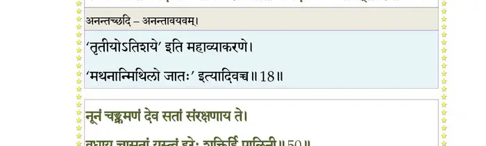
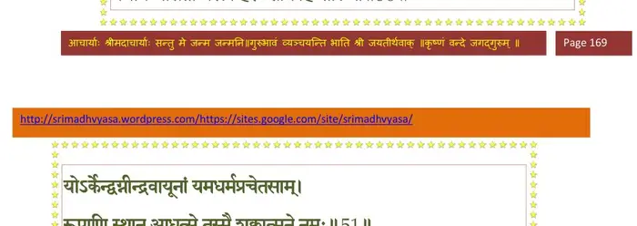
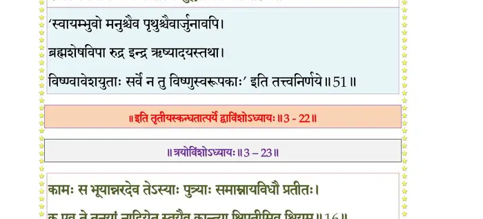

स्कन्ध 3 · अध्याय 22
श्लोक १
विदुर उवाच–
स्वायम्भुवस्य च मनोर्वंशः परमसम्मतः ।
कथ्यतां भगवन् यत्र मैथुनेनैधिरे प््राजाः।। १ ।।
स्वायम्भुवस्य च मनोर्वंशः परमसम्मतः ।
कथ्यतां भगवन् यत्र मैथुनेनैधिरे प््राजाः।। १ ।।
श्लोक २
प््रिायव्रतोत्तानपादौ सुतौ स्वायम्भुवस्य वै ।
यथाधर्मं जुगुपतुः सप्तद्वीपवतीं महीम्।। २ ।।
यथाधर्मं जुगुपतुः सप्तद्वीपवतीं महीम्।। २ ।।
श्लोक ३
तस्य वै दुहिता ब्रह्मन् देवहूतीति विश्रुता ।
पत्नी प््राजापतेरुक्ता कर्दमस्य त्वयाऽनघ।। ३ ।।
पत्नी प््राजापतेरुक्ता कर्दमस्य त्वयाऽनघ।। ३ ।।
श्लोक ४
तस्यां स वै महायोगी युक्तायां योगलक्षणैः ।
ससर्ज कतिधा वीर्यं तन्मे शुश्रूषवे वद।। ४ ।।
ससर्ज कतिधा वीर्यं तन्मे शुश्रूषवे वद।। ४ ।।
श्लोक ५
रुचिर्यो भगवान् ब्रह्मन् दक्षो वा ब्रह्मणः सुतः ।
यथा ससर्ज भूतानि लब्ध्वा भार्यां च मानवीम्।। ५ ।।
यथा ससर्ज भूतानि लब्ध्वा भार्यां च मानवीम्।। ५ ।।
श्लोक ६
मैत्रेय उवाच–
प््राजाः सृजेति भगवान् कर्दमो ब्रह्मणोदितः ।
सरस्वत्यां तपस्तेपे सहस्राणां समा दश।। ६ ।।
प््राजाः सृजेति भगवान् कर्दमो ब्रह्मणोदितः ।
सरस्वत्यां तपस्तेपे सहस्राणां समा दश।। ६ ।।
श्लोक ७
ततः समाधियुक्तेन क्रियायोगेन कर्दमः ।
संप््रापेदे हरिं भक्त्या प््रापन्नवरदाशुषम्।। ७ ।।
संप््रापेदे हरिं भक्त्या प््रापन्नवरदाशुषम्।। ७ ।।
श्लोक ८
तावत् प््रासन्नो भगवान् पुष्कराक्षः कृते युगे ।
दर्शयामास तं क्षत्तः शाब्दं ब्रह्म दधद् वपुः।। ८ ।।
दर्शयामास तं क्षत्तः शाब्दं ब्रह्म दधद् वपुः।। ८ ।।
भागवततात्पर्यनिर्णय
श्लोक ९
सतं विरजमर्काभं सितपद्मोज्ज्वलत्स्रजम् ।
स्निग्धनीलालकव्रातवक्राब्जविरजाम्बरम्।। ९ ।।
स्निग्धनीलालकव्रातवक्राब्जविरजाम्बरम्।। ९ ।।
श्लोक १०
किरीटिनं कुण्डलिनं शङ्खचक्रगदाधरम् ।
श्वेतोत्पलक्रीडनकं मनःस्पर्शस्मितेक्षणम्।। १० ।।
श्वेतोत्पलक्रीडनकं मनःस्पर्शस्मितेक्षणम्।। १० ।।
श्लोक ११
विन्यस्तचरणाम्भोजमंसदेशे गरुत्मतः ।
दृष्ट्वा खेऽवस्थितं वक्षःश्रियं कौस्तुभकन्धरम्।। ११ ।।
दृष्ट्वा खेऽवस्थितं वक्षःश्रियं कौस्तुभकन्धरम्।। ११ ।।
श्लोक १२
जातहर्षोऽपतन्मूर्ध्ना क्षितौ लब्धमनोरथः ।
गीर्भिस्त्वभ्यगृणात् प््राीतः स्वभावात्मा कृताञ्जलिः।। १२ ।।
गीर्भिस्त्वभ्यगृणात् प््राीतः स्वभावात्मा कृताञ्जलिः।। १२ ।।
श्लोक १३
कर्दम उवाच–
जुष्टं बताद्याखिलसत्त्वराशेः संसिद्धमक्ष्णोस्तव दर्शनान्नः ।
यद् दर्शनं जन्मभिरीड्य सद्भिराशासते योगिनो रूढयोगाः।। १३ ।।
जुष्टं बताद्याखिलसत्त्वराशेः संसिद्धमक्ष्णोस्तव दर्शनान्नः ।
यद् दर्शनं जन्मभिरीड्य सद्भिराशासते योगिनो रूढयोगाः।। १३ ।।
श्लोक १४
ये मायया ते हतचेतसस्त्वत्पादारविन्दं भवसिन्धुपोतम् ।
उपासते कामलवाय तेषां रासीश कामान् निरयेऽपि ये स्युः।।१४।।
उपासते कामलवाय तेषां रासीश कामान् निरयेऽपि ये स्युः।।१४।।
श्लोक १५
तथा स चाहं परिवोढुकामः समानशीलां गृहमेधिधेनुम् ।
उपेयिवान् मूलमशेषमूलं दुराशयः कामदुघाङ्घ्रिपस्य।। १५ ।।
उपेयिवान् मूलमशेषमूलं दुराशयः कामदुघाङ्घ्रिपस्य।। १५ ।।
श्लोक १६
प््राजापतेस्ते वचसाऽधीश तन्त्या लोकः किलायं कामहेतोर्निबद्धः ।
अहं च लोकानुगतो वहामि बलिं च शुक्लानिमिषाय तुभ्यम्।।१६।।
अहं च लोकानुगतो वहामि बलिं च शुक्लानिमिषाय तुभ्यम्।।१६।।
श्लोक १७
लोकांश्च लोकानुगतानसूंश्च हित्वा श्रितास्ते चरणातपत्रम् ।
परस्परं त्वद्गुणवादसीधुपीयूषनिर्यापितदेहधर्माः।। १७ ।।
परस्परं त्वद्गुणवादसीधुपीयूषनिर्यापितदेहधर्माः।। १७ ।।
श्लोक १८
न तेऽजराक्षभ्रमिरायुरेषां त्रयोदशारं त्रिशतं षष्ठिपर्व ।
षण्णेम्यनन्तच्छिदि यत् त्रिनाभि करालस्रोतो जगदाच्छिद्य धावत्।। १८ ।।
षण्णेम्यनन्तच्छिदि यत् त्रिनाभि करालस्रोतो जगदाच्छिद्य धावत्।। १८ ।।
भागवततात्पर्यनिर्णय

श्लोक १९
एकः स्वयं सन् जगतः सिसृक्षया द्वितीययाऽऽत्मन्नधियोगमायया ।
सृजस्यदः पासि पुनर्ग्रहीष्यसे यथोर्णनाभिर्भगवन् स्वशक्तिभिः ।।१९।।
सृजस्यदः पासि पुनर्ग्रहीष्यसे यथोर्णनाभिर्भगवन् स्वशक्तिभिः ।।१९।।
श्लोक २०
नैतद् बताधीश पदं तवेप्सितम् यन्मायया जगृहे भूतसूक्ष्मम् ।
अनुग्रहाय त्वयि यर्हि मालया लसत्तुलस्या भगवान् विलक्षितः।। २० ।।
अनुग्रहाय त्वयि यर्हि मालया लसत्तुलस्या भगवान् विलक्षितः।। २० ।।
श्लोक २१
तं त्वाऽनुभूत्योपरतक्रियार्थं स्वमायया वर्तितलोकतन्त्रम् ।
नमाम्यभीक्ष्णं नमनीयपादसरोजमल्पीयसि कामवर्षम्।। २१ ।।
नमाम्यभीक्ष्णं नमनीयपादसरोजमल्पीयसि कामवर्षम्।। २१ ।।
श्लोक २२
ऋषिरुवाच–
इत्यव्यलीकं प््राणतोऽब्जनाभस्तमाबभाषे वचसाऽमृतेन ।
सुपर्णपक्षोपरि रोचमानः प््रोमस्मितोद्वीक्षणविभ्रमद्भ्रुः।। २२ ।।
इत्यव्यलीकं प््राणतोऽब्जनाभस्तमाबभाषे वचसाऽमृतेन ।
सुपर्णपक्षोपरि रोचमानः प््रोमस्मितोद्वीक्षणविभ्रमद्भ्रुः।। २२ ।।
श्लोक २३
भगवानुवाच–
विदित्वा तव चैत्त्यं मे पुरैव समयोजितम् ।
यदर्थमात्मनियमैस्त्वयैवाहं समर्चितः।। २३ ।।
विदित्वा तव चैत्त्यं मे पुरैव समयोजितम् ।
यदर्थमात्मनियमैस्त्वयैवाहं समर्चितः।। २३ ।।
श्लोक २४
न वै जातु मृषेदं स्यात् प््राजाध्यक्ष मदर्हणम् ।
भवद्विधेष्वतितरां मयि संगृहितात्मनाम्।। २४ ।।
भवद्विधेष्वतितरां मयि संगृहितात्मनाम्।। २४ ।।
श्लोक २५
प््राजापतिपतिः सम्राट् मनुर्विख्यातमङ्गलः ।
ब्रह्मावर्तं योऽधिवसंञ्छास्ति सप्तार्णवां महीम्।। २५ ।।
ब्रह्मावर्तं योऽधिवसंञ्छास्ति सप्तार्णवां महीम्।। २५ ।।
श्लोक २६
स चेह विप््रा राजर्षिर्महिष्या शतरूपया ।
आयास्यति दिदृक्षुस्त्वां परश्वो धर्मकोविदम्।। २६ ।।
आयास्यति दिदृक्षुस्त्वां परश्वो धर्मकोविदम्।। २६ ।।
श्लोक २७
आत्मजामसितापाङ्गीं वयःशीलगुणान्विताम् ।
मृगयन्तीं पतिं दास्यत्यनुरूपाय ते प््राभुः।। २७ ।।
मृगयन्तीं पतिं दास्यत्यनुरूपाय ते प््राभुः।। २७ ।।
श्लोक २८
समाहितं ते हृदयं यत्रेमान् परिवत्सरान् ।
सा त्वां ब्रह्मन् नृपवधूः काममाशु भजिष्यति।। २८ ।।
सा त्वां ब्रह्मन् नृपवधूः काममाशु भजिष्यति।। २८ ।।
श्लोक २९
या त आत्मधृतं वीर्यं नवधा प््रासविष्यति ।
वीर्ये त्वदीय ऋषय आधास्यंस्तेज आत्मनः।। २९ ।।
वीर्ये त्वदीय ऋषय आधास्यंस्तेज आत्मनः।। २९ ।।
श्लोक ३०
त्वं च सम्यगनुष्ठाय निर्देशं म उशत्तर ।
मयि तीर्थीकृताशेषक्रियार्थो मां प््रापत्स्यसे।। ३० ।।
मयि तीर्थीकृताशेषक्रियार्थो मां प््रापत्स्यसे।। ३० ।।
श्लोक ३१
कृत्वा दयां च जीवेषु दत्वा चाभयमात्मवान् ।
मय्यात्मानं सहजगद् द्रक्षस्यात्मनि चापि माम्।। ३१ ।।
मय्यात्मानं सहजगद् द्रक्षस्यात्मनि चापि माम्।। ३१ ।।
श्लोक ३२
संभूय स्वांशकलया त्वद्वीर्येण महामते ।
तव क्षेत्रे देवहूत्यां प््राणेष्ये तत्त्वसंहिताम्।। ३२ ।।
तव क्षेत्रे देवहूत्यां प््राणेष्ये तत्त्वसंहिताम्।। ३२ ।।
श्लोक ३३
एवं तमनुभाष्याथ भगवान् प््रात्यगक्षगः ।
जगाम बिन्दुसरसः सरस्वत्या परिश्रितात्।। ३३ ।।
जगाम बिन्दुसरसः सरस्वत्या परिश्रितात्।। ३३ ।।
श्लोक ३४
निरीक्षतस्तस्य ययाऽवशेषसिद्धेश्वराभिष्टुतसिद्धमार्गः ।
आकर्णयन् पत्ररथेन्द्रपत्रैरुच्चारितं स्तोममुदीर्णसाम।। ३४ ।।
आकर्णयन् पत्ररथेन्द्रपत्रैरुच्चारितं स्तोममुदीर्णसाम।। ३४ ।।
श्लोक ३५
एवं संप््रास्थिते शुक्ले कर्दमो भगवान् ऋषिः ।
आस्ते स्म बिन्दुसरसि तं कालं प््रातिपालयन्।। ३५ ।।
आस्ते स्म बिन्दुसरसि तं कालं प््रातिपालयन्।। ३५ ।।
श्लोक ३६
मनुः स्यन्दनमास्थाय शातकौम्भपरिच्छदम् ।
आरोप्य स्वां दुहितरं सभार्यः पर्यटन् महीम्।। ३६ ।।
आरोप्य स्वां दुहितरं सभार्यः पर्यटन् महीम्।। ३६ ।।
श्लोक ३७
तस्मिन् सुधन्वन्नहनि भगवान् यत् समादिशत् ।
उपायादाश्रमपदं मनुः शान्तव्रतस्य तत्।। ३७ ।।
उपायादाश्रमपदं मनुः शान्तव्रतस्य तत्।। ३७ ।।
श्लोक ३८
यस्मिन् भगवतो नेत्रादपतन् हर्षबिन्दवः ।
कृपया संपरीतस्य प््रापन्नेऽर्पितया भृशम्।। ३८ ।।
कृपया संपरीतस्य प््रापन्नेऽर्पितया भृशम्।। ३८ ।।
श्लोक ३९
तद् वै बिन्दुसरो नाम सरस्वत्या परिप्लुतम् ।
पुण्यं शिवामृतजलं महर्षिगणसेवितम्।। ३९ ।।
पुण्यं शिवामृतजलं महर्षिगणसेवितम्।। ३९ ।।
श्लोक ४०
पुण्यद्रुमलताजालैः कूजत्पुण्यमृगद्विजैः ।
सर्वर्तुफलपुष्पाढ्यं वनराजिश्रियान्वितम्।। ४० ।।
सर्वर्तुफलपुष्पाढ्यं वनराजिश्रियान्वितम्।। ४० ।।
श्लोक ४१
मत्तद्विजगणोद्घुष्टं मत्तभ्रमरविभ्रमम् ।
मत्तबर्हिनटाटोपमाह्वयन्मत्तकोकिलम्।। ४१ ।।
मत्तबर्हिनटाटोपमाह्वयन्मत्तकोकिलम्।। ४१ ।।
श्लोक ४२
कदम्बचम्पकाशोककरञ्जबकुलासनैः ।
कुन्दमन्दारकुटजैश्चूतपोतैरलंकृतम्।। ४२ ।।
कुन्दमन्दारकुटजैश्चूतपोतैरलंकृतम्।। ४२ ।।
श्लोक ४३
कारण्डवैर्बकैर्हंसैः कुररैर्जलकुक्कुटैः ।
सारसैश्चक्रवाकैश्च चकोरैर्वल्गुकूजितम्।। ४३ ।।
सारसैश्चक्रवाकैश्च चकोरैर्वल्गुकूजितम्।। ४३ ।।
श्लोक ४४
शशकैर्हरिणैः क्रोडैः श्वविड्गवयकुञ्जरैः ।
गोपुच्छैर्हरिभिर्मर्कैर्नकुलैर्नाभिभिर्वृतम्।। ४४ ।।
गोपुच्छैर्हरिभिर्मर्कैर्नकुलैर्नाभिभिर्वृतम्।। ४४ ।।
श्लोक ४५
प््राविश्य तत् तीर्थवरमादिराजः सहानुगः ।
ददर्श मुनिमासीनं तस्मिन् हुतहुताशनम्।। ४५ ।।
ददर्श मुनिमासीनं तस्मिन् हुतहुताशनम्।। ४५ ।।
श्लोक ४६
विद्योतमानं वपुषा तपस्युग्रयुजा चिरम् ।
नातिक्षामं भगवतः स्निग्धापाङ्गविलोकनात्।। ४६ ।।
नातिक्षामं भगवतः स्निग्धापाङ्गविलोकनात्।। ४६ ।।
श्लोक ४७
तद्व्याहृतामृतकलापीयूषश्रवणेन च ।
प््र•ंशुं पद्मपलाशाक्षं जटिलं चीरवाससम् ।
उपसंसृत्य मलिनं यथाऽर्हणमसंस्कृतम्।। ४७ ।।
प््र•ंशुं पद्मपलाशाक्षं जटिलं चीरवाससम् ।
उपसंसृत्य मलिनं यथाऽर्हणमसंस्कृतम्।। ४७ ।।
श्लोक ४८
अथोटजमुपायान्तं नृदेवं प््राणतं पुरः ।
सपर्यया प््रात्यगृह्णात् प््रातिनन्द्यानुरूपया।। ४८ ।।
सपर्यया प््रात्यगृह्णात् प््रातिनन्द्यानुरूपया।। ४८ ।।
श्लोक ४९
गृहीतार्हणमासीनं संयतं प््राीणयन् मुनिः ।
स्मरन् भगवदादेशमित्याह श्लक्ष्णया गिरा।। ४९ ।।
स्मरन् भगवदादेशमित्याह श्लक्ष्णया गिरा।। ४९ ।।
श्लोक ५०
नूनं चङ्क्रमणं देव सतां संरक्षणाय ते ।
वधाय चासतां यस्त्वं हरेः शक्तिर्हि पालिनी।। ५० ।।
वधाय चासतां यस्त्वं हरेः शक्तिर्हि पालिनी।। ५० ।।
भागवततात्पर्यनिर्णय

श्लोक ५१
योऽर्केन्द्वग्नीन्द्रवायूनां यमधर्मप््राचेतसाम् ।
रूपाणि स्थान आधत्से तस्मै शुक्लात्मने नमः।। ५१ ।।
रूपाणि स्थान आधत्से तस्मै शुक्लात्मने नमः।। ५१ ।।
भागवततात्पर्यनिर्णय

श्लोक ५२
न यदा रथमास्थाय जैत्रं मणिगणार्पितम् ।
विस्फुरच्चण्डकोदण्डो रथेन त्रासयन्नघान्।। ५२ ।।
विस्फुरच्चण्डकोदण्डो रथेन त्रासयन्नघान्।। ५२ ।।
श्लोक ५३
स्वसैन्यचरणक्षुण्णं वेपयन् मण्डलं भुवः ।
विकर्षन् बृंहतीं सेनां पर्यटस्यंशुमानिव।। ५३ ।।
विकर्षन् बृंहतीं सेनां पर्यटस्यंशुमानिव।। ५३ ।।
श्लोक ५४
तदैव सेतवः सर्वे वर्णाश्रमनिबन्धनाः ।
भगवद्रचिता राजन् भिद्येरन् बत दस्युभिः।। ५४ ।।
भगवद्रचिता राजन् भिद्येरन् बत दस्युभिः।। ५४ ।।
श्लोक ५५
अधर्मश्च समेधेत लोलुपैर्व्यङ्कुशैर्नृभिः ।
शयाने त्वयि लोकोऽयं दस्युग्रस्तो विनङ्क्षयति।। ५५ ।।
शयाने त्वयि लोकोऽयं दस्युग्रस्तो विनङ्क्षयति।। ५५ ।।
श्लोक ५६
अथाऽपि पृच्छे त्वां वीर यदर्थं त्वमिहागतः ।
तद् वयं निर्व्यलीकेन प््रातिपद्यामहे हृदा।। ५६ ।।
तद् वयं निर्व्यलीकेन प््रातिपद्यामहे हृदा।। ५६ ।।
।। इति श्रीमद्भागवते तृतीयस्कन्धे द्वाविंशोऽध्यायः ।।